For sale!
We are moving out from Enschede at the end of February. We decided
to bring with us the bare minimum and that's why we are selling a lot
of our stuff. If you are interested in any of the objects in the
following
list, please contact us via e-mail at jacopo.bertolotti@gmail.com or
via telephone at the number +31631212018. We have a strict deadline, so
we will apply a "first-come, first-served" policy. All prices are
negotiable (how much depends on the specific item, of course), but do
not include transportation.
Please notice that a few items are for free!
Honda Jazz 1.2 iVTEC
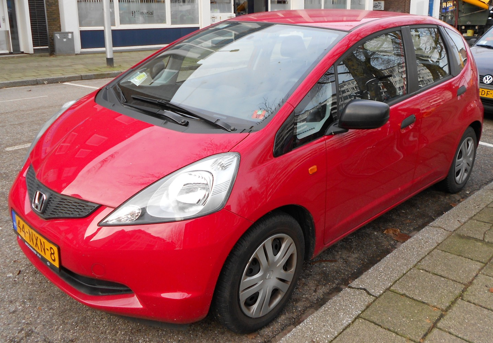Purchased in July 2009.
Mileage <19000 km.
Cyl. capacity: 1198 ccm.
Body: Hatchback/5.
Output: 66 kW / 90 hp.
Manual gear.
Petrol + LPG engine.
Conditions: Radio antenna was stolen and never replaced. A small bump
on the right side. Otherwise in excellent condition. Smooth, silent
(and cheap) driving!
Notes: Dutch licence plate. APK passed in January 2013. Car battery
changed in January 2012 (still 1 year warranty). Air conditioning.
Price: 9000 €
Bicycle pump
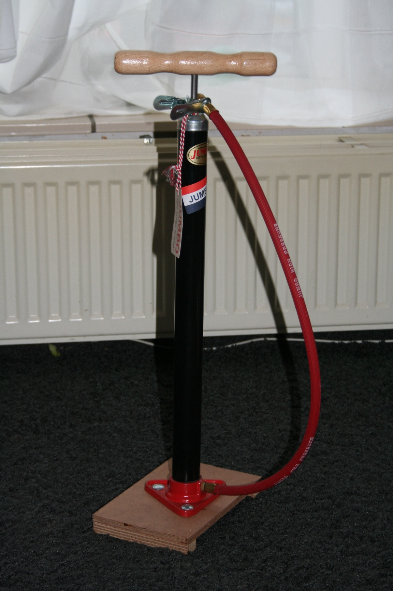Jumbo bike pump
Conditions: pristine.
Price: 5€
Electric fondue set
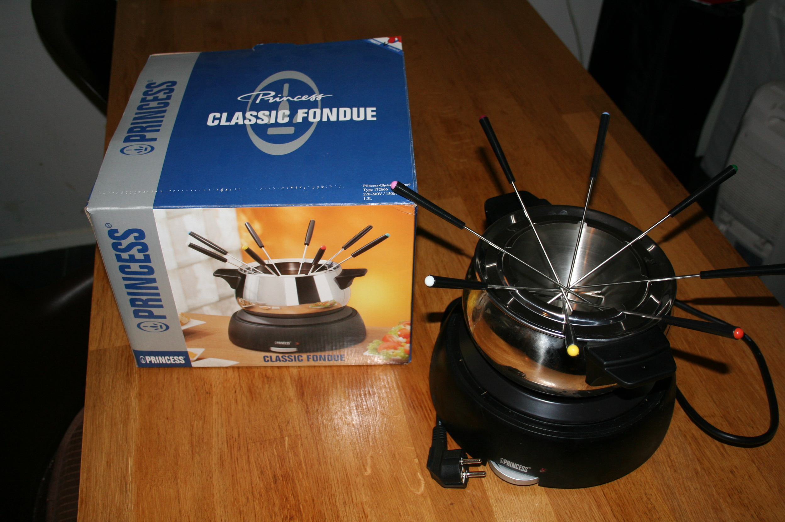Princess Classic Fondue
Purchased: December 2011.
Original box, 8 fondue forks, and fork rack included.
Conditions: excellent.
Price: 15 €
Digital bathroom scale (Booked)
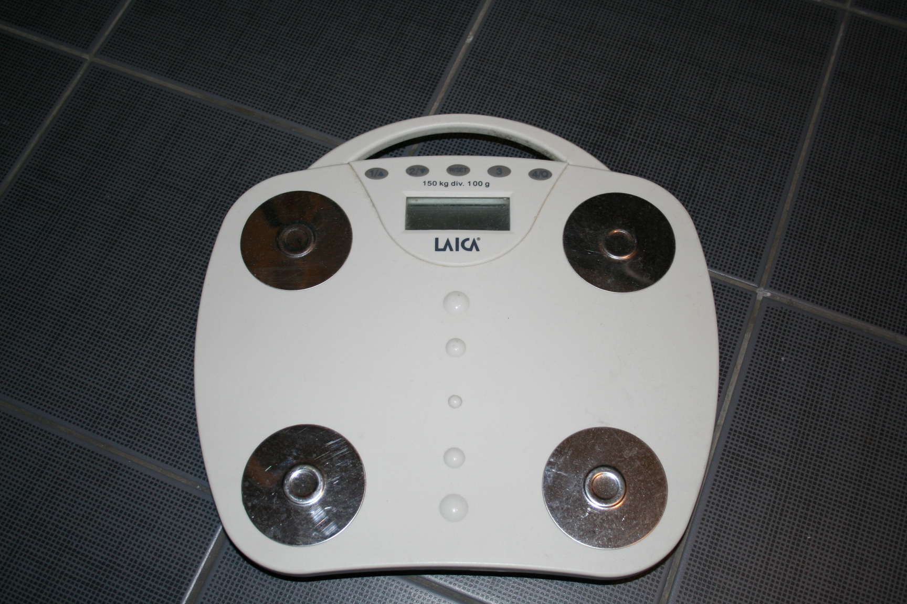Laica digital scale
Purchased: 2006.
Conditions: excellent.
Price: 5 €
Electric radiator heater
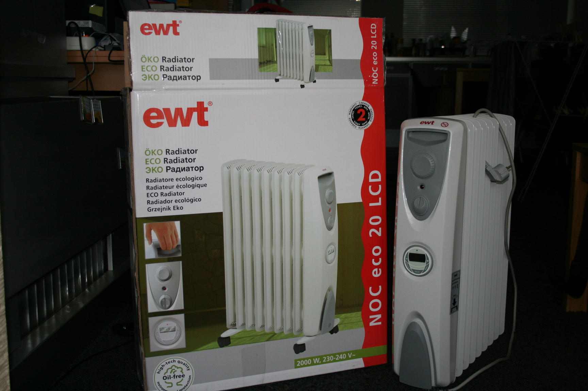EWT Eco radiator 20 LCD
External link: Mediamarkt
Purchased: November 2011.
Conditions: pristine.
Notes: Oil free. Timer. Thermostat control.
Price: 35 €
Chest of drawers
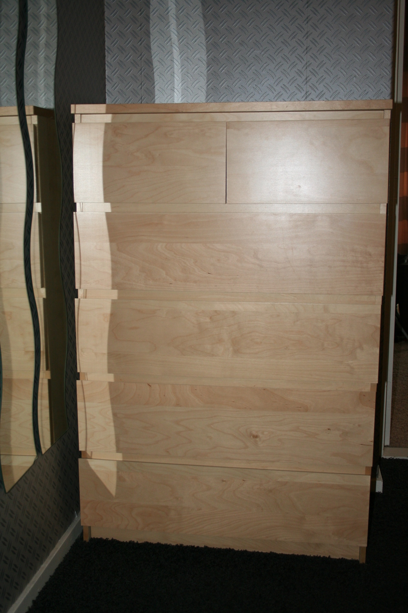IKEA MALM chest of drawers (6
drawers)
Dimensions: h 123cm, w 80 cm, d 48 cm.
External link: IKEA
Purchased: one in 2010 and the other in 2012.
Conditions: perfect.
Price: 30 € (each)
Wooden table
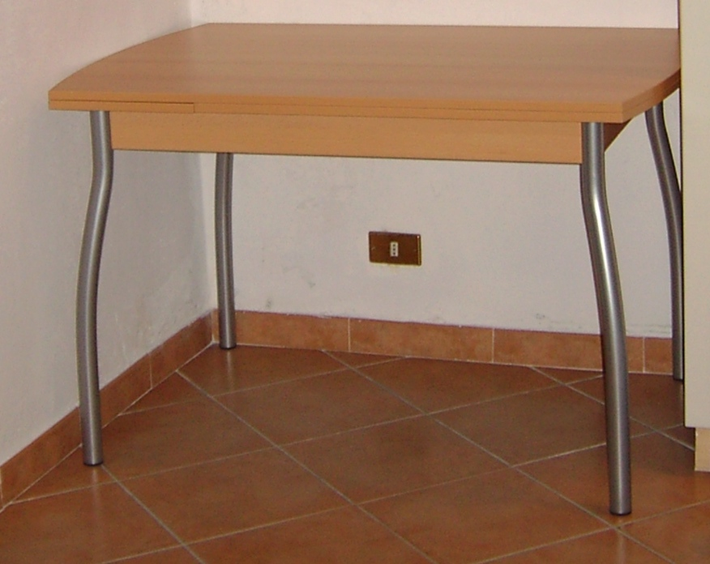Extendable wooden table
Dimensions: h 75 cm, w 120 cm (extendable to 180 cm), d 80 cm.
Purchased: 2005.
Conditions: excellent.
Price: 30 €
Lamp
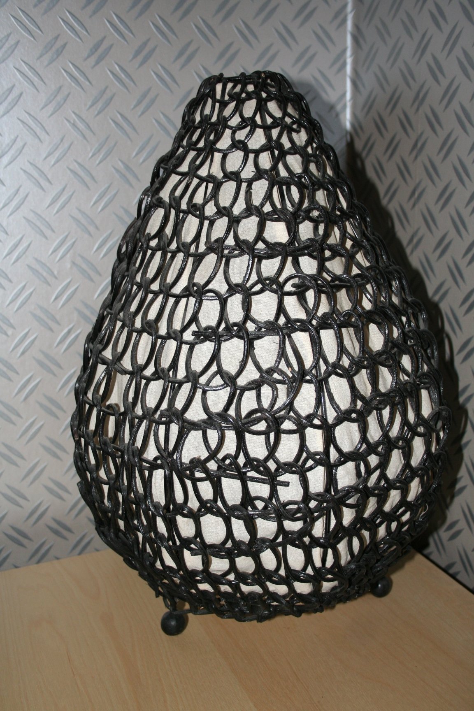Table lamp (h 45 cm)
Purchased in 2005.
Conditions: good.
Price: for free!
Bookcases
 IKEA BILLY bookcase (6 shelves)
IKEA BILLY bookcase (6 shelves)
Dimensions: h 202 cm, w 80 cm, d 28 cm.
External link: IKEA
Purchased: 2010.
Conditions: very good.
Price: 10 €
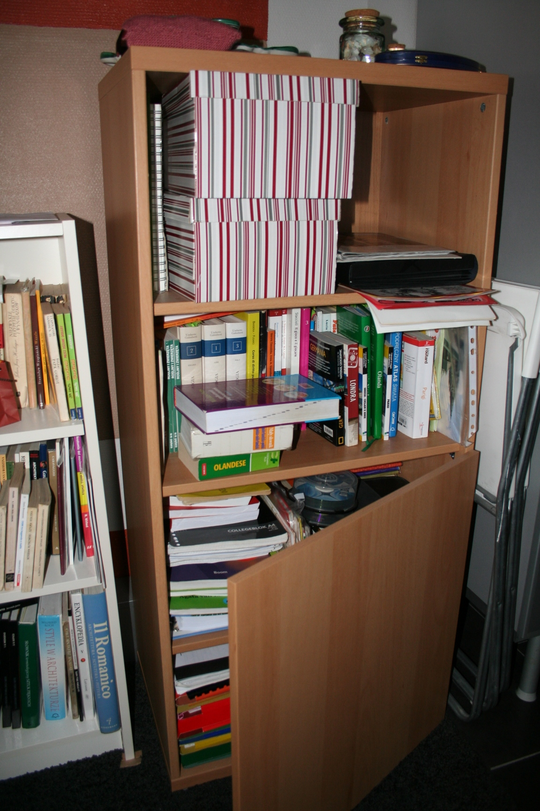IKEA BESTA bookcase (4 shelves)
Dimensions: h 128 cm, w 60 cm, d 40 cm.
External link: IKEA
Purchased: 2010.
Conditions: very good.
Notes: one extra door for the 2 lower shelves.
Price: 20 €
Kitchen serving cart
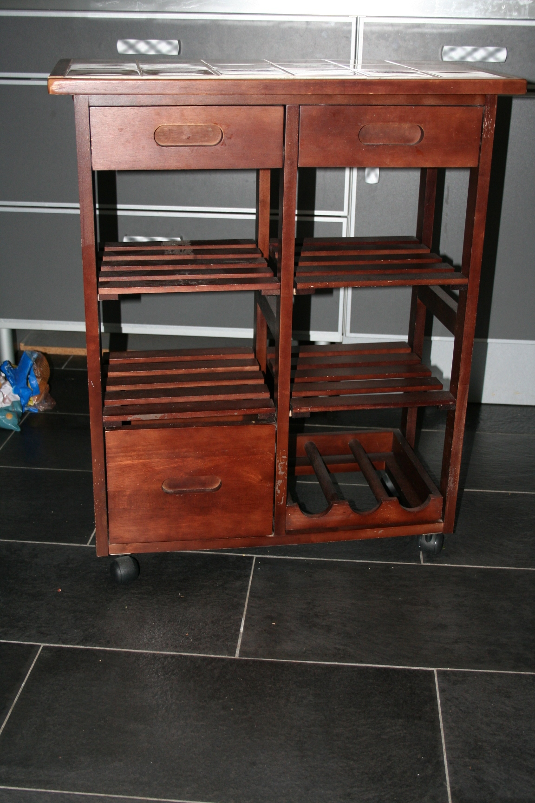Wooden kitchen serving cart
with ceramic top, 3 drawers, 4 shelves and 1 bottle rack-
Dimensions: h 80 cm, w 70 cm, d 37 cm.
Purchased: 2005.
Conditions: some minor damage.
Price: 10 €
Children stool
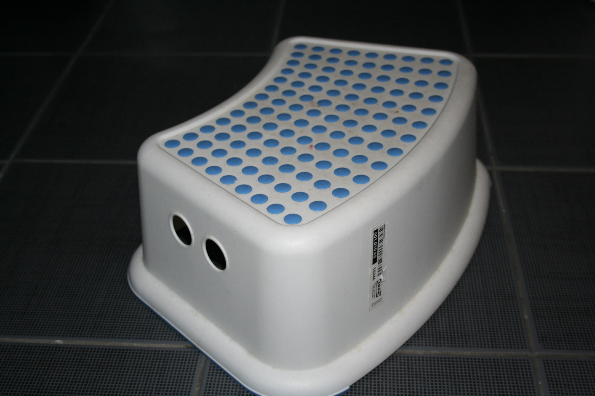IKEA FORSIKTIG children stool
External link: IKEA
Conditions: excellent.
Price: for free!
Wine glasses (x12) (Booked)
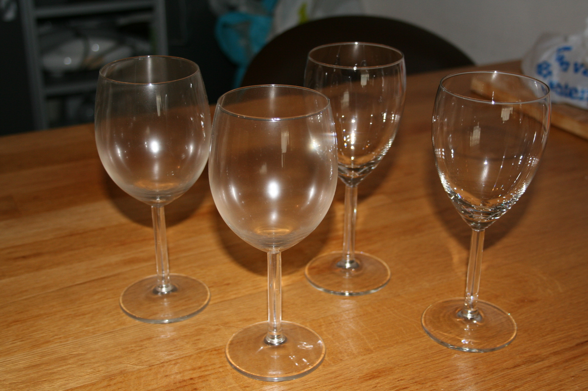IKEA SVALKA wine glasses (6
red wine glesses and 6 white wine glasses)
Purchased: 2005
External link: IKEA
Conditions: pristine.
Price: for free!
Rattan basket for documents (Booked)
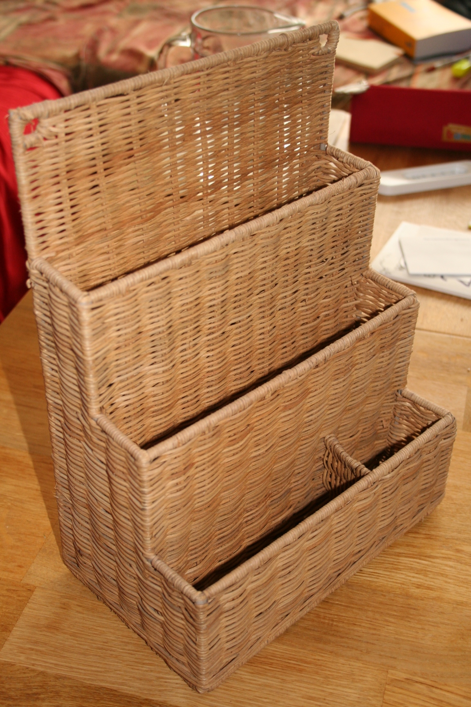IKEA (model out of production)
Dimensions: h 33 cm, w 24 cm, d 14 cm.
Purchased: 2005.
Condition: good.
Price: for free!